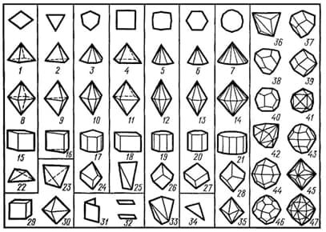

Form (En). Простая форма (Ru).
Kristallning simmetrik ekvivalent yoqlarining majmui. Oddiy shakllar izoedrlarning hususiy (kristallografik) holati hisoblanadi. Yopiq (yopiq ko'pyoq hosil qiluvchi) va ochiq oddiy shakllar, shuningdek umumiy (simmetriyaning biron bir elementida yotmaydigan) va hususiy shakllar mavjud bo’ladi. Jami geometrik turli oddiy shakllar mavjud, ularning 25 tasi kubik sistemada (28-rasm). Oddiy shaklning barcha yoqllari {hkl} belgisi bilan birlashtirilgan.

28-rasm. Kristallarning oddiy shakllari: 1 - rombik pyramida; 2 - trigonal piramida; 3 - ditrigonal piramida; 4 - tetragonal piramida; 5 - ditetragonal piramida; 6 - geksagonal piramida; 7 – digeksagonal piramida; 8 - rombik dipiramida; 9 - trigonal dipiramida; 10 - ditrigonal dipiramida; 11 - tetragonal dipiramida; 12 - ditetragonal dipiramida; 13 – geksagonal dipiramida; 14 - digeksagonal dipiramida; 15 - rombik prizma; 16 - trigonal prizma; 17 - ditrigonal prizma; 18 - tetragonal prizma; 19 - ditetragonal prizma; 20 – geksagonal prizma; 21 - digeksagonal prizma; 22 - rombik tetraedr; 23 - tetraedr; 24 - trigonal trapetsoedr; 25 - tetragonal tetraedr; 26 - tetragonal trapetsoedr; 27 - romboedr; 28 - geksagonal trapetsoedr; 29 - kub; 30 - oktaedr; 31 - diedr; 32 - pinakoid; 33 - tetragonal skalanoedr; 34-monoedr; 35 - ditrigonal skalenoedr; 36-trigon-tritetraedr; 37-tetragon-tritetraedr; 38 – pentagon- tritetraedr; 39 - rombododekaedr; 40 - besh yadroli dodekaedr; 41 - tetraheksaedr; 42 - geksatetraedr; 43 - diododekaedr; 44 - tetragon-trioktaedr; 45 - trigon-trioktaedr; 46 - pentagon-trioktedr; 47-geksaoktedr.